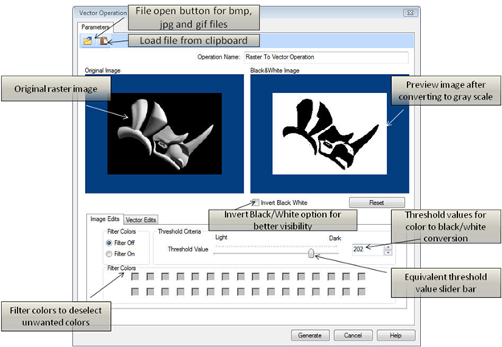
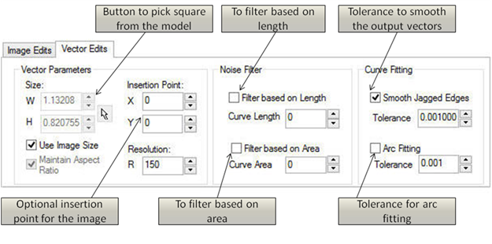
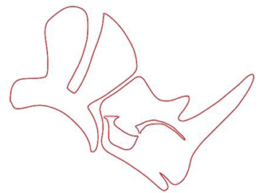

This method is mainly used to convert and image outline into curves, so that they can be used in the next operation. The first step is to convert the image into black and white image based on the threshold value you have defined.
The black and white picture is converted to a collection of lines and arcs, representing its outline. There is a possibility to adjust further the smoothness of the contours, if desired.
This property page will allow you to load, convert the image to black/white image and preview a color image to a gray scale bitmap. Also, it allows you to view the converted image into a vector and to make changes in the image options to review the vector geometry. The dialog for this implementation will be very similar to the dialog for Raster to 3D Relief. The operation will can be undone if you want to reject the obtained geometry.
 Dialog Box: Vector Operation |
Allows you to change the name if so desired by typing the new name. |
The invert color option is provided for you to be able to invert the gray scale. The gray scale inversion is required in case the model needs to be created as a relief depth instead of relief height. |
The reset button is provided for you to be able to reset the changes that have been done before such as inverting the image, or changing the Gray scale value color components. |
Turns off the filter for colors thus not filtering any colors. |
Turns on the filter for colors thus allowing you to filter out specified colors. |
The Threshold slider filters out pixels with gray-scale values smaller than the threshold. The left-hand preview box shows the original image with its gray tones. The right preview box shows the image that will result from the selected Black/White conversion method. You can specify the value by using the slider bar, entering numerical values or using the up/down arrows. |
This strategy is used for converting the image in to a 32 colors image. You can select a specific part of the image by filtering out the colors from the image. Filtering can be obtained by checking the colored check boxes. If a specific color in the check box is checked, then it will not be used in the raster to vector conversion. The Threshold Slider Bar will NOT work in this mode and is disabled during this operation. |
 Dialog Box: Vector Operation, Vector Edits tab |
The width (W) and height (H) of the relief size can be specified by entering numerical values, using the up/down arrows or by using the pointer to pick the area from the model. |
If this option is checked, this will honor the original image size. It will use the original image size and place it within the project workspace. |
If Use Image Size is unchecked this will enable this function allowing you to either maintain the aspect ratio(i.e. scale factor) if checked or if it is unchecked it will not honor the aspect ratio. The aspect ratio refers to the width/height ratio of the image. The pick button allows user to pick two points such that the aspect ratio of the image remains same, and the image does not get distorted in the mapping process. On pressing the pick button, the dialog box gets minimized until you have picked two points. You can cancel the pick operation by right clicking on the mouse. |
You can specify the insertion point of the image by either entering numerical values, using the up/down arrows or by using the pointer to pick the insertion point within the project. |
The resolution defines the accuracy used to generate the actual model. The higher the resolution, the better the quality of the output mesh generated. However, increasing the resolution also reduces the relief generation time and above all affects the display. |
Filters all closed/unclosed curves whose length is smaller than or equal to the specified length. |
Filters all closed curves whose area is smaller than or equal to the specified area. |
This option will smooth the jagged edges of the curve during the raster to vector conversion based on the specified tolerance. |
Fits arcs to the curves created during the raster to vector conversion based on the specified tolerance. |
The output of the generated vector looks as shown in the figure below. For better output, the resolution may be needed to be specified again in the project settings tab. The obtained Curve cannot be selected immediately and needs to be exported to VisualCAD Curve by pressing export button while the curve is visible. This curve can now be used as an input for generating sweep operation as well as puffing up the interior of the curves as explained in the next two sections.  Generated Vector
|